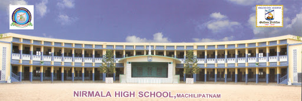
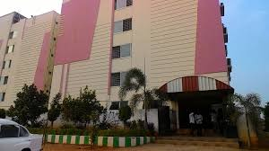

Hello!
I'm
Divya Jandhyala.

I'm currently pursuing MSIT from IIIT-Hyderabad. I am passionate towards building websites and look forward to learn it in this course. I was born and brought up in a Machilipatnam from where I did my schooling.I did my intermediate from Vijayawada and B-Tech from Hyderabad.I will be giving a tour of my hometown and also the famous foods available there.I also like to show you some of my interests through this website
 Nirmala HIgh School is the place from where I completed my schooling. It is a missionary school run by the sisters of Immaculate.This is the place where I learned moral values and learning on my own. The best thing about this school is that it has a vast playground.Foundation for my comunicaton skills was laid here.
 I'm a student of Sri Chaitanya Junior college in my intermediate. Being here was a whole lot different kind of experience,where I got new friends and also got acustomed to hostel life.

I graduated fromGitam University Hyderabad campus. I learnt about the basics of programming here.This is the place where I got some good friends.I also got time to explore my passion. Fortunately, I got placed in a start-up as a manual tester.